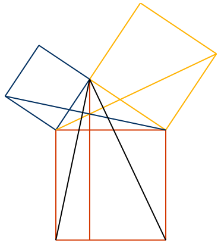

A web-based fork of Euclid's Elements
The colors are heavily inspired by Oliver Byrne’s version of the Elements (the colors themselves are a direct ripoff, but I’ve used them in different ways). I’ve also made use of Richard Fitzpatrick’s translation of the Elements, as well as D.E. Joyce’s site on the Elements, which is, of course, the original web adaptation of Euclid. Proof Wiki’s presentation has been useful as well.